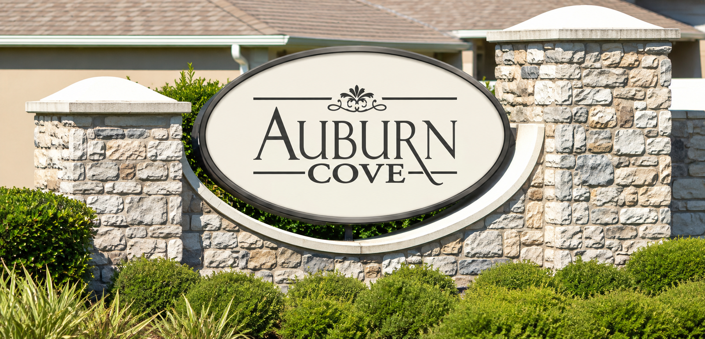
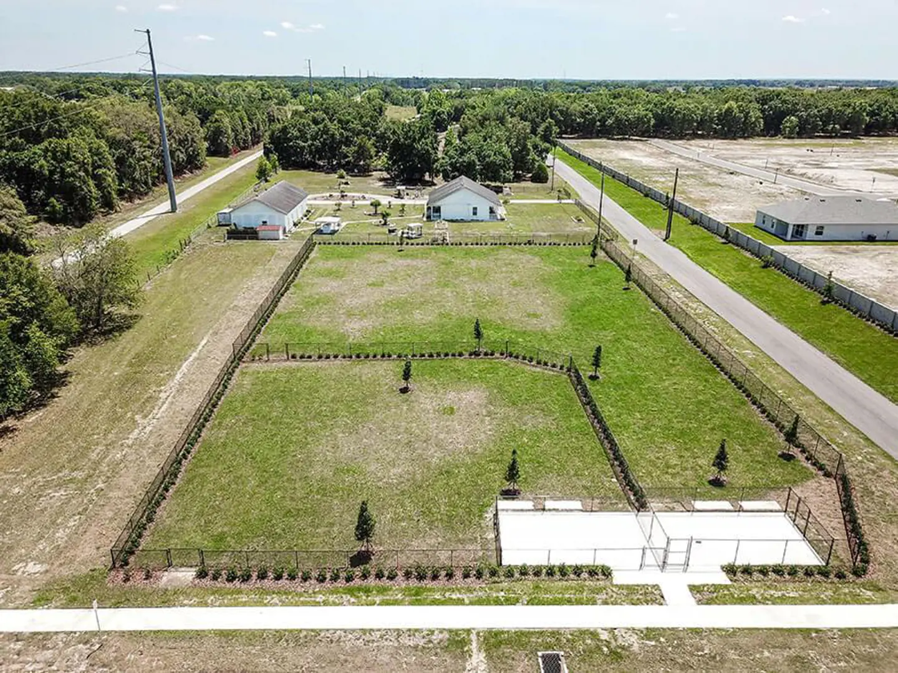

WELCOME HOME
Welcome to
Auburn Cove
A central place for neighborhood information, community updates, and homeowner resources.
OUR NEIGHBORHOOD
About Auburn Cove
Auburn Cove is a residential community located in Auburndale, Florida, in the heart of Polk County. Our neighborhood is conveniently situated near Interstate 4, between Tampa and Orlando.
Established in 2020, Auburn Cove is home to residents who enjoy a quiet neighborhood setting, shared community spaces, and convenient access to the surrounding Central Florida area.
This website was created as a place for Auburn Cove residents to find community information, stay informed about neighborhood updates, and access helpful homeowner resources.

Our Community
Auburn Cove includes several shared outdoor areas and amenities for residents, including:
- Neighborhood walking paths
- Picnic tables and benches
- Multi-purpose open playfield
- Community dog park
- Community ponds and open green spaces
The neighborhood is also located near the Auburndale TECO Trail and approximately two miles from Interstate 4.
Residents and visitors are asked to follow posted signs and community rules when using shared areas.
Local Schools & Education
Schools and educational institutions in the surrounding area include:
- Lena Vista Elementary School
- Stambaugh Middle School
- Tenoroc High School
- Berkley Charter School
- Florida Polytechnic University
School attendance boundaries and enrollment requirements should be verified with the appropriate school or district.
Community Information & Resources
This website provides a central location for neighborhood announcements, community information, and homeowner resources.
Approved homeowners can use the secure Resident Portal → to access HOA documents and other information intended for Auburn Cove residents.
HOMEOWNER RESOURCES
Documents & Forms
Once approved documents are provided, this section can organize the community's declarations, bylaws, architectural forms, budgets, and meeting minutes.
Documents are available only to approved homeowners through the secure resident portal.
NEIGHBORHOOD GUIDELINES
Community Rules
Community rules and official policies are available to approved homeowners in the private resident portal.
STAY INFORMED
Community Announcements
Our community website is taking shape
This is an initial preview. Official HOA announcements and meeting dates will appear here when supplied by an authorized administrator.
FOR HOMEOWNERS
Resident Portal
Sign in to view private HOA documents and community rules.
GET IN TOUCH
Questions or suggestions?
Official HOA contact information can be added here when confirmed.